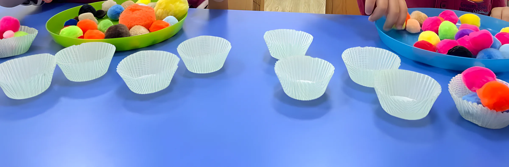
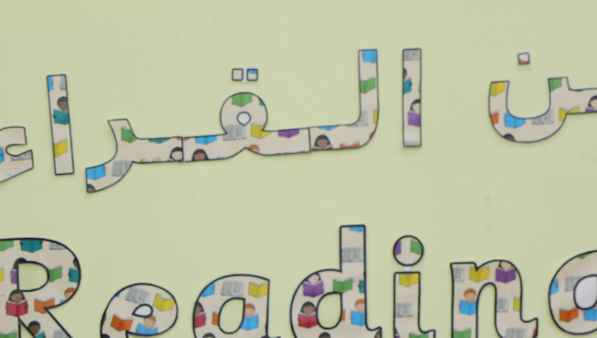
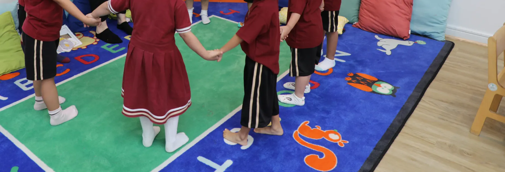
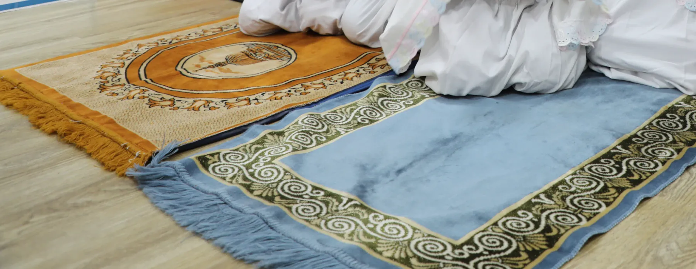
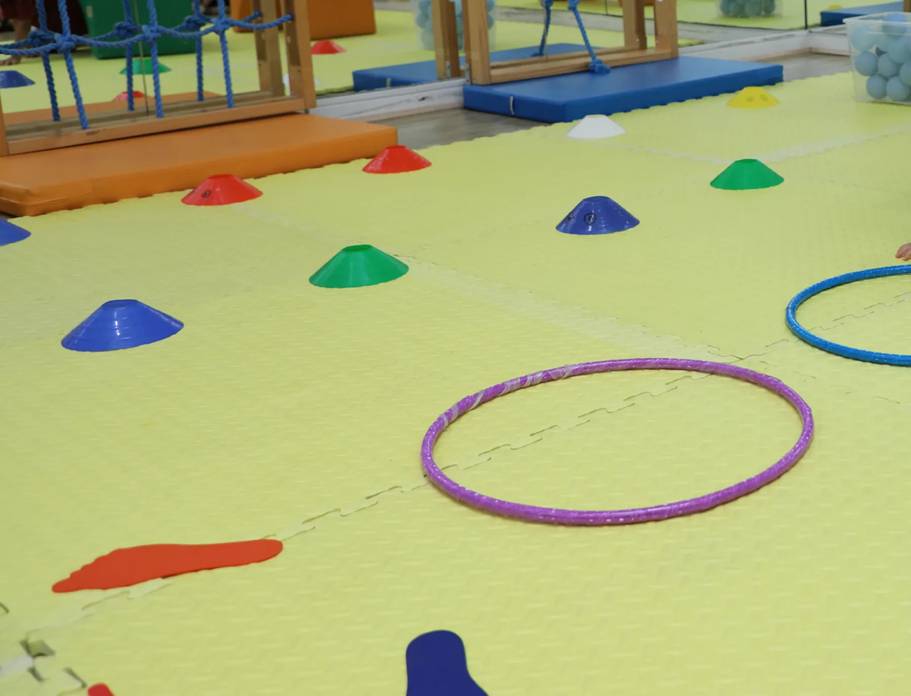
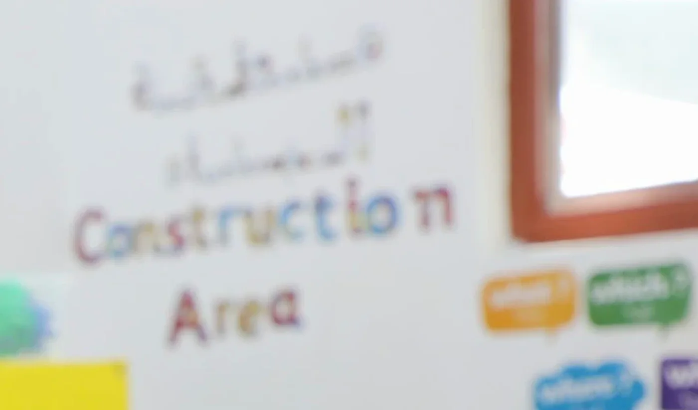

Creative and messy play
Play dough, painting, collage, glue, foam and water. We offer a wide range of activities with lots of creative and messy play, because that is how small children learn best.
حضانة أكاديمية الأطفال المبدعين
British EYFS nursery in Officers City, Abu Dhabi. Ages 2 months to 4 years.
Dear Parents, we know the things we learn in the first five years are the only things that endure and shape the rest of our lives. It is a privilege to be trusted with your child at this stage.
Creative Kids Academy, committed to excellence

The Reading Area, ركن القراءة, in English and Arabic.

Circle time on the alphabet rug.
Every child grows at their own pace, so we place children by their stage of development as well as their age.
Care, comfort and trust, with play based on the senses. You hear about feeds and nappy changes every day.

Role play, shared reading and circle time, where children start putting sentences together.

Joint play, inventing games, and finding out about cause and effect and the wider world.

Letters and Sounds, Jolly Phonics in the last term, numbers, and the confidence to cope with change.

We keep our staff-to-child ratios low to give each child closer attention. Every child also has a Key Worker who follows their progress.
One member of staff to the number of children shown.
Not only is play lots of fun, it helps children understand the world around them. A few of the things your child will do here.

Play dough, painting, collage, glue, foam and water. We offer a wide range of activities with lots of creative and messy play, because that is how small children learn best.

Many children in the UAE grow up with more than one language. We teach in English and Arabic, and children have Islamic and Quran lessons daily, so they are ready for any school.

Our setting is bright and spacious, with vast indoor and outdoor spaces: a play hall with nets and hoops, and a shaded playground on the grass.

Children bring the topics and ideas. Our teachers listen, then bring in scientific, literary and mathematical ideas to take them further.

Construction AreaSmall World Area
Infants room
Play hall
 Outdoor playground
Outdoor playground
It's very important that parents feel confident leaving their children with us. This is how we make sure.

Our staff are trained in first aid and know how to deal with allergies.
Only the people you name can collect your child. Anyone else must be agreed with us in advance and show ID. If we're in doubt, we don't release your child.
One person who follows your child's progress and helps them settle, under the Class Teacher. Children are always within sight or hearing.
All play areas inside and outside are safe and secure, and all play equipment is checked for breakages and faults.
Staff are trained in basic food hygiene, and we help you pack a balanced lunchbox your child will want to eat.
From the parents' page on cka.ae
My daughter has been attending since she was a year old and her speech and confidence has grown. … I love that they play outside in the fresh air every day (unless of high winds) which I think is extremely important.
I love how they emphasis on the teaching of Arabic and Islamic which was a must to us. My daughter loves CkA and she's always excited in the morning to meet her teacher and friends.
من أفضل حضانات ابوظبي. ادارة ورعاية ونظافة واهتمام بالاطفال واولياء الأمور. الموظفين متعاونين جداً والأنشطة متعددة يومية وأسبوعية لتنمية مهارات الطفل.The teachers and the assistants are all lovely, very supportive, caring and understanding. … my boy is improving and i hope he will be much more better.
Call 02 558 5583 (or the mobile, 050 241 1538) and we'll find a time for you to visit.
Stop by and talk to our Center Director. See the classrooms, the play hall and the playground, and ask anything.
In the first days you can stay with your child until they settle. In the first two weeks you meet the Class Teacher about your child's needs.
Family Development Foundation, Officers City, Abu Dhabi
P.O. Box 42974, Abu Dhabi, UAE
| Monday | 7am – 3pm |
| Tuesday | 7am – 3pm |
| Wednesday | 7am – 3pm |
| Thursday | 7am – 3pm |
| Friday | 7am – 1pm |
Or email reception@cka.ae